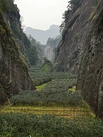
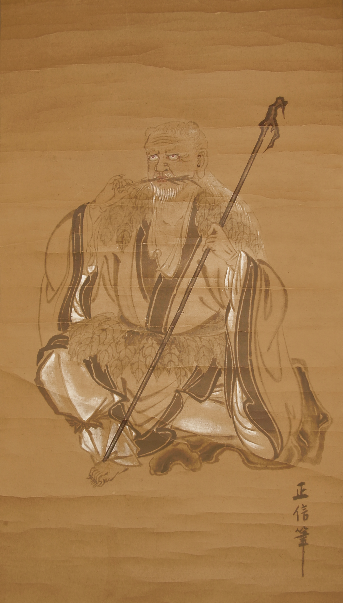
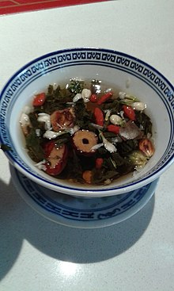

Origin And History
Botanical origin
Tea plants are native to East Asia and probably originated in the borderlands of southwestern China and north Burma.[15]

Wuyi tea plantation in Wuyi Mountains, Fujian, China
Chinese (small-leaf) type tea (C. sinensis var. sinensis) may have originated in southern China possibly with hybridization of unknown wild tea relatives. However, since there are no known wild populations of this tea, its origin is speculative.[16][17]
Given their genetic differences forming distinct clades, Chinese Assam-type tea (C. sinensis var. assamica) may have two different parentages – one being found in southern Yunnan (Xishuangbanna, Pu'er City) and the other in western Yunnan (Lincang, Baoshan). Many types of Southern Yunnan Assam tea have been hybridized with the closely related species Camellia taliensis. Unlike Southern Yunnan Assam tea, Western Yunnan Assam tea shares many genetic similarities with Indian Assam-type tea (also C. sinensis var. assamica). Thus, Western Yunnan Assam tea and Indian Assam tea both may have originated from the same parent plant in the area where southwestern China, Indo-Burma, and Tibet meet. However, as the Indian Assam tea shares no haplotypes with Western Yunnan Assam tea, Indian Assam tea is likely to have originated from an independent domestication. Some Indian Assam tea appears to have hybridized with the species Camellia pubicosta.[16][17]
Assuming a generation of 12 years, Chinese small-leaf tea is estimated to have diverged from Assam tea around 22,000 years ago, while Chinese Assam tea and Indian Assam tea diverged 2,800 years ago. The divergence of Chinese small-leaf tea and Assam tea would correspond to the last glacial maximum.[16][17]
Early tea drinking
Tea drinking may have begun in the region of Yunnan, where it was used for medicinal purposes. It is also believed that in Sichuan, "people began to boil tea leaves for consumption into a concentrated liquid without the addition of other leaves or herbs, thereby using tea as a bitter yet stimulating drink, rather than as a medicinal concoction."[8]

A 19th-century Japanese painting depicting Shennong: Chinese legends credit Shennong with the invention of tea.
Chinese legends attribute the invention of tea to the mythical Shennong (in central and northern China) in 2737 BC, although evidence suggests that tea drinking may have been introduced from the southwest of China (Sichuan/Yunnan area).[18] The earliest written records of tea come from China. The word tú 荼 appears in the Shijing and other ancient texts to signify a kind of "bitter vegetable" (苦菜), and it is possible that it referred to many different plants such as sow thistle, chicory, or smartweed,[19] as well as tea.[20] In the Chronicles of Huayang, it was recorded that the Ba people in Sichuan presented tu to the Zhou king. The Qin later conquered the state of Ba and its neighbour Shu, and according to the 17th century scholar Gu Yanwu who wrote in Ri Zhi Lu (日知錄): "It was after the Qin had taken Shu that they learned how to drink tea."[2] Another possible early reference to tea is found in a letter written by the Qin Dynasty general Liu Kun who requested that some "real tea" to be sent to him.[21]
The earliest known physical evidence[22] of tea was discovered in 2016 in the mausoleum of Emperor Jing of Han in Xi'an, indicating that tea from the genus Camellia was drunk by Han dynasty emperors as early as the 2nd century BC.[23] The Han dynasty work, "The Contract for a Youth", written by Wang Bao in 59 BC,[24] contains the first known reference to boiling tea. Among the tasks listed to be undertaken by the youth, the contract states that "he shall boil tea and fill the utensils" and "he shall buy tea at Wuyang".[2] The first record of tea cultivation is also dated to this period, during which tea was cultivated on Meng Mountain (蒙山) near Chengdu.[25] Another early credible record of tea drinking dates to the 3rd century AD, in a medical text by Hua Tuo, who stated, "to drink bitter t'u constantly makes one think better."[26] However, before the mid-8th century Tang dynasty, tea-drinking was primarily a southern Chinese practice.[27] Tea was disdained by the Northern dynasties aristocrats, who describe it as a "slaves' drink", inferior to yogurt.[28][29] It became widely popular during the Tang dynasty, when it was spread to Korea, Japan, and Vietnam. The Classic of Tea, a treatise on tea and its preparations, was written by Lu Yu in 762.
Developments
 Tea-weighing station north of Batumi, Russian Empire before 1915
Tea-weighing station north of Batumi, Russian Empire before 1915
Through the centuries, a variety of techniques for processing tea, and a number of different forms of tea, were developed. During the Tang dynasty, tea was steamed, then pounded and shaped into cake form,[30] while in the Song dynasty, loose-leaf tea was developed and became popular. During the Yuan and Ming dynasties, unoxidized tea leaves were first stirred in a hot dry pan, then rolled and air-dried, a process that stops the oxidation process that would have turned the leaves dark, thereby allowing tea to remain green. In the 15th century, oolong tea, in which the leaves are allowed to partially oxidize before being heated in the pan, was developed.[27] Western tastes, however, favoured the fully oxidized black tea, and the leaves were allowed to oxidize further. Yellow tea was an accidental discovery in the production of green tea during the Ming dynasty, when apparently careless practices allowed the leaves to turn yellow, which yielded a different flavour.[31]
Worldwide Spread
Tea was first introduced to Western priests and merchants in China during the 16th century, at which time it was termed chá.[10] The earliest European reference to tea, written as chiai, came from Delle navigationi e viaggi written by Venetian Giambattista Ramusio in 1545.[32] The first recorded shipment of tea by a European nation was in 1607 when the Dutch East India Company moved a cargo of tea from Macao to Java, then two years later, the Dutch bought the first assignment of tea which was from Hirado in Japan to be shipped to Europe.[33] Tea became a fashionable drink in The Hague in the Netherlands, and the Dutch introduced the drink to Germany, France, and across the Atlantic to New Amsterdam (New York).[34]

Tea with ingredients, China
In 1567, Russian people came in contact with tea when the Cossack Atamans Petrov and Yalyshev visited China.[35] The Mongolian Khan donated to Tsar Michael I four poods (65–70 kg) of tea in 1638.[36] According to Jeremiah Curtin,[37] it was possibly in 1636[38] that Vassili Starkov was sent as envoy to the Altyn Khan. As a gift to the tsar, he was given 250 pounds of tea. Starkov at first refused, seeing no use for a load of dead leaves, but the Khan insisted. Thus was tea introduced to Russia. In 1679, Russia concluded a treaty on regular tea supplies from China via camel caravan in exchange for furs. It is today considered the de facto national beverage.
The first record of tea in English came from a letter written by Richard Wickham, who ran an East India Company office in Japan, writing to a merchant in Macao requesting "the best sort of chaw" in 1615. Peter Mundy, a traveller and merchant who came across tea in Fujian in 1637, wrote, "chaa – only water with a kind of herb boyled in it".[39][40] Tea was sold in a coffee house in London in 1657, Samuel Pepys tasted tea in 1660, and Catherine of Braganza took the tea-drinking habit to the English court when she married Charles II in 1662. Tea, however, was not widely consumed in the British Isles until the 18th century and remained expensive until the latter part of that period. English drinkers preferred to add sugar and milk to black tea, and black tea overtook green tea in popularity in the 1720s.[41] Tea smuggling during the 18th century led to the general public being able to afford and consume tea. The British government removed the tax on tea, thereby eliminating the smuggling trade, by 1785.[42] In Britain and Ireland, tea was initially consumed as a luxury item on special occasions, such as religious festivals, wakes, and domestic work gatherings. The price of tea in Europe fell steadily during the 19th century, especially after Indian tea began to arrive in large quantities; by the late 19th century tea had become an everyday beverage for all levels of society.[43] The popularity of tea played a role in historical events – the Tea Act of 1773 provoked the Boston Tea Party that escalated into the American Revolution. The need to address the issue of British trade deficit because of the trade in tea resulted in the Opium Wars. The Qing Kangxi Emperor had banned foreign products from being sold in China, decreeing in 1685 that all goods bought from China must be paid for in silver coin or bullion.[44] Traders from other nations then sought to find another product, in this case opium, to sell to China to earn back the silver they were required to pay for tea and other commodities. The subsequent attempts by the Chinese Government to curtail the trade in opium led to war.[45]
Chinese small-leaf-type tea was introduced into India in 1836 by the British in an attempt to break the Chinese monopoly on tea.[46] In 1841, Archibald Campbell brought seeds of Chinese tea from the Kumaun region and experimented with planting tea in Darjeeling. The Alubari tea garden was opened in 1856, and Darjeeling tea began to be produced.[47] In 1848, Robert Fortune was sent by the Honourable East India Company on a mission to China to bring the tea plant back to Great Britain. He began his journey in high secrecy as his mission occurred in the lull between the First Opium War and the Second Opium War.[48] The Chinese tea plants he brought back were introduced to the Himalayas, though most did not survive. The British had discovered that a different variety of tea was endemic to Assam and the northeast region of India, which was then hybridized with Chinese small-leaf-type tea. Using Chinese planting and cultivation techniques, the British colonial government established a tea industry by offering land in Assam to any European who agreed to cultivate it for export.[46] Tea was originally consumed only by Anglo-Indians; however, it became widely popular in India in the 1950s because of a successful advertising campaign by the India Tea Board.[46] The British introduced tea industry to Sri Lanka (then Ceylon) in 1867.[49]